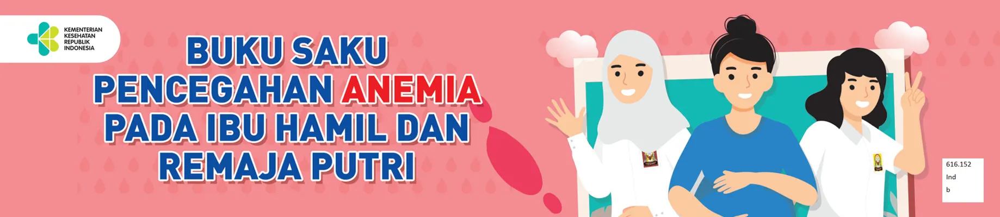

Anemia pada Ibu Hamil
Anemia adalah kondisi ketika kadar hemoglobin (Hb) dalam darah lebih rendah dari normal. Hemoglobin berfungsi membawa oksigen ke seluruh sel jaringan tubuh. Pada ibu hamil, anemia meningkatkan risiko komplikasi seperti perdarahan, bayi berat badan lahir rendah (BBLR), dan kelahiran prematur. Data Riskesdas 2018 mencatat prevalensi anemia pada ibu hamil di Indonesia sebesar 48,9 persen.

Apa Itu Anemia pada Kehamilan?
Ibu hamil disebut anemia bila kadar hemoglobinnya di bawah 11 g/dL. Berdasarkan kadar Hb, derajat anemia dibedakan menjadi ringan (Hb 8–9,9 g/dL), sedang (Hb 6–7,9 g/dL), dan berat (Hb kurang dari 6 g/dL). Karena zat besi dibutuhkan untuk membentuk hemoglobin, kekurangan zat besi menjadi penyebab anemia yang paling umum pada kehamilan.
Penyebab Anemia
- Defisiensi (kekurangan) zat besi.
- Kekurangan vitamin B12 dan asam folat.
- Anemia pada penyakit kronik.
- Anemia akibat perdarahan akut.
- Anemia hemolitik, yaitu sel darah merah lebih cepat hancur sebelum waktunya (misalnya pada thalasemia).
Tanda dan Gejala
Gejala anemia pada ibu hamil antara lain mudah lelah dan lemas, pusing, kulit pucat, jantung berdebar (denyut jantung dan pernapasan lebih cepat), napas pendek, sulit berkonsentrasi, tangan dan kaki terasa dingin, serta penurunan kualitas rambut dan kulit. Keluhan ini sering dianggap wajar sehingga anemia kerap tidak terdeteksi tanpa pemeriksaan kadar Hb.
Dampak Anemia
Pada ibu, anemia dapat meningkatkan risiko keguguran, persalinan prematur, hambatan tumbuh kembang janin, dan perdarahan. Pada janin, anemia dapat menyebabkan berat badan lahir rendah, kelahiran dengan anemia, mudah terkena infeksi, hingga gangguan tumbuh kembang. Karena itu pencegahan dan deteksi dini menjadi penting.
Pencegahan dan Penanggulangan
Anemia pada ibu hamil sering berkaitan dengan anemia yang sudah dialami sebelum kehamilan, terutama pada remaja putri dan wanita usia subur. Dampak anemia tersebut akan terbawa hingga ia menjadi ibu hamil, sehingga pencegahan sebaiknya dimulai sejak sebelum kehamilan melalui pola makan bergizi seimbang dan konsumsi TTD secara rutin.
- Perbaiki asupan makanan: konsumsi protein hewani (daging, unggas, ikan, telur, susu), makanan kaya asam folat (sayuran hijau, hati, kacang-kacangan), buah berwarna jingga dan merah, serta makanan sumber vitamin B12.
- Cukupi vitamin C: membantu penyerapan zat besi. Konsumsi sayuran hijau minimal 3 porsi per hari.
- Minum TTD: tablet tambah darah berisi 60 mg besi elemental dan 400 mcg asam folat, diminum 1 kali sehari setelah makan dan dihindari bersama teh atau kopi.
- Periksa kehamilan rutin: agar kadar Hb dapat diperiksa dan anemia ditangani lebih awal.
- Hindari penghambat penyerapan: teh dan kopi mengandung kafein yang menghambat penyerapan zat besi, jadi jangan diminum bersamaan dengan TTD.
Sumber
- Buku Saku Pencegahan Anemia pada Ibu Hamil dan Remaja Putri — Kementerian Kesehatan RI
- Buku Saku Pencegahan Anemia (PDF) — Kementerian Kesehatan RI
- Anemia pada Kehamilan – Ditjen Kesehatan Lanjutan — Kementerian Kesehatan RI
- Remaja Bebas Anemia — Kementerian Kesehatan RI
Terakhir diperbarui: 11 Oktober 2026